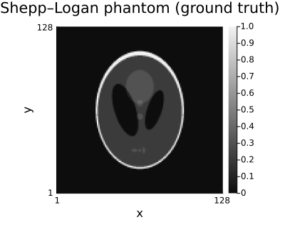
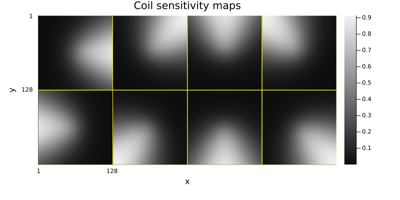
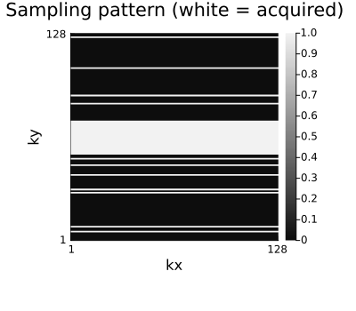
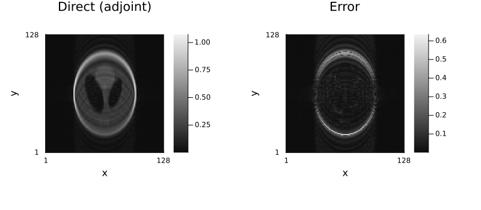
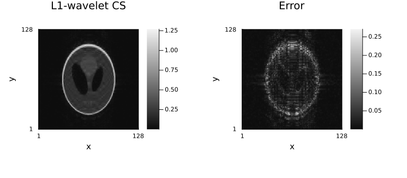
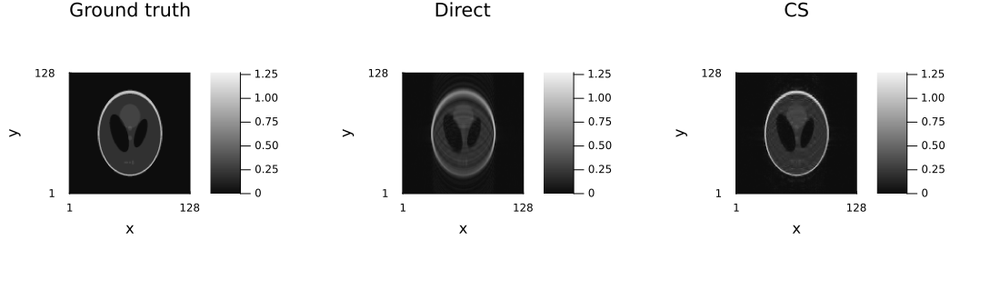

1 — Getting started with Ristretto
Download this tutorial as a Jupyter notebook (with NotebookUtils.jl next to it).
This tutorial walks through a complete MRI reconstruction in about twenty lines of code: build a phantom, simulate an undersampled multi-coil acquisition, and reconstruct it first directly and then with compressed sensing.
Contents
- The pieces of an MRI acquisition
- Simulating k-space
- Direct (adjoint) reconstruction
- Compressed-sensing reconstruction
- Where to go next
using .NotebookUtils
using Ristretto
using GeometricMedicalPhantoms: create_shepp_logan_phantom, MRISheppLoganIntensities
using MIRTjim: jim
using Plots
using Random
Random.seed!(0);
jim(:colorbar, true);1. The pieces of an MRI acquisition
The forward model Ristretto solves is
\[y = \mathcal{A}x = \mathcal{P}\,\mathcal{F}\,\mathcal{S}\,x\]
with $\mathcal{S}$ the coil sensitivities, $\mathcal{F}$ the Fourier transform and $\mathcal{P}$ the k-space sampling pattern. We need a ground-truth image $x$, sensitivity maps, and a sampling pattern.
nx, ny, nc = 128, 128, 8
# The object rasterized area-sampled (`supersample`), so that it can be drawn on any grid; on the
# 128² reconstruction grid it is the truth the errors are measured against.
phantom(n) = create_shepp_logan_phantom(
n, n, :axial; ti = MRISheppLoganIntensities(), eltype = ComplexF32, supersample = 4
)
x_true = phantom(nx)
jim(x_true; title = "Shepp–Logan phantom (ground truth)", size = (400, 350))
# Smooth, complex-valued receive profiles for an 8-element array.
smaps = coil_sensitivities(nx, ny, nc)
jim(smaps; title = "Coil sensitivity maps", nrow = 2, size = (800, 400))
Simulated maps already satisfy $\sum_c |S_c(r)|^2 = 1$. Measured ones do not — their scale depends on how they were estimated — and normalize_sensitivity_maps(acq) returns a copy that does. It is worth doing on real data: it puts the image on the conventional intensity scale, makes a regularization strength carry from one dataset to the next, and makes the encoding operator a contraction so the solver's step size follows from a closed-form bound instead of a power iteration. See 09_real_data_cartesian §3.
println("sum_c |S_c|^2 range: ", round.(extrema(sum(abs2, smaps; dims = 3)), sigdigits = 6))sum_c |S_c|^2 range: (0.999999f0, 1.0f0)# Variable-density random sampling: 4× acceleration, fully sampled 15% centre.
pdf = VariableDensitySampling(PolynomialDistribution(3), 4.0, 0.15)
pattern = create_sampling_pattern(pdf, (nx, ny))
mask = to_displayable_mask(pattern, (nx, ny))
println("acceleration: ", round(nx * ny / sum(mask), digits = 2), "×")
jim(mask; title = "Sampling pattern (white = acquired)", size = (400, 350), kaxes...)
2. Simulating k-space
AcquisitionInfo is the container that holds everything known about the acquisition. Constructed without k-space data it describes an acquisition that has not happened yet, which is exactly what simulate_acquisition needs.
The data are simulated from the same object on a finer grid, 202² (about 1.6 times finer), with a little noise: data made by the very operator that reconstructs them would fit it exactly and flatter every method (the inverse crime, see Simulation). The coil maps act on that grid; keep_sensitivity_maps = true returns them resampled to the reconstruction grid, standing in for maps estimated from the data.
nfine = 202
acq = AcquisitionInfo(;
is3D = false,
image_size = (nx, ny),
subsampling = pattern,
sensitivity_maps = coil_sensitivities(nfine, nfine, nc),
)
x_fine = phantom(nfine) + 0.01f0 * randn(ComplexF32, nfine, nfine)
data = simulate_acquisition(x_fine, acq; keep_sensitivity_maps = true)
println("k-space data: ", size(data.kspace_data), " ", eltype(data.kspace_data))k-space data: (128, 32, 8) ComplexF323. Direct (adjoint) reconstruction
With no method argument, reconstruct applies $\mathcal{A}^H$ — zero-filling the missing k-space and combining the coils with the sensitivity maps. It is instantaneous, and on 4×-undersampled data it is visibly aliased.
x_direct = reconstruct(data)
println("direct NRMSE: ", round(nrmse(x_direct, x_true), digits = 4))
jim(jim(x_direct; title = "Direct (adjoint)"), difference_image(x_direct, x_true); layout = (1, 2), size = (800, 350))
4. Compressed-sensing reconstruction
The undersampling is random, so the aliasing is incoherent and an $\ell_1$ penalty on the wavelet coefficients can remove it. IterativeReconstruction takes the regularizers as positional arguments and everything that tunes the solve as keywords — maxit, reltol and algorithm are all set on the method itself.
method = IterativeReconstruction(L1Wavelet2D(2.0f-3); maxit = 60)
x_cs = reconstruct(data, method)
println("CS NRMSE: ", round(nrmse(x_cs, x_true), digits = 4))
jim(jim(x_cs; title = "L1-wavelet CS"), difference_image(x_cs, x_true); layout = (1, 2), size = (800, 350))
# Side by side with the ground truth.
side_by_side(x_true, x_direct, x_cs; titles = ("Ground truth", "Direct", "CS"), size = (1100, 330))
5. Where to go next
| Tutorial | Topic |
|---|---|
| Acquisition info | AcquisitionInfo, named dimensions, validation |
| Simulation | phantoms, coil maps, sampling patterns, noise |
| Reconstruction methods | GRAPPA, SPIRiT, partial Fourier |
| Regularization | every regularizer in the package |
| Algorithms and configuration | solvers, tolerances, scaling, verbosity, task splitting |
| Dynamic and decomposition | dynamic imaging, L+S, image decomposition |
| Non cartesian | radial/spiral trajectories, NFFT, density compensation |
| Real data cartesian | real 0.3 T brain data end to end |
| Real data dynamic | real 1.5 T cardiac cine, low-rank + sparse |
| Advanced reconstruction | data fidelity, signal models, calibrationless k-space |
| Low level interface | operators, StructuredOptimization, custom terms |
Further reading
The physics this tutorial's five lines of code stand on, from Questions and Answers in MRI:
- What is k-space? — what
kspace_datais. - k-space: parts — centre versus periphery.
- Parallel imaging — why an acquisition has coils and sensitivity maps at all.
- Compressed sensing — why undersampled data needs a regularizer.
Environment
print_versions()Julia Version 1.13.1
Commit 96ca370cf0e (2026-09-25 19:34 UTC)
Build Info:
Official https://julialang.org release
Platform Info:
OS: Linux (x86_64-linux-gnu)
CPU: 4 × AMD EPYC 9V74 80-Core Processor
WORD_SIZE: 64
LLVM: libLLVM-20.1.8 (ORCJIT, znver4)
GC: Built with stock GC
Threads: 2 default, 1 interactive, 2 GC (on 4 virtual cores)
Environment:
JULIA_PKG_SERVER_REGISTRY_PREFERENCE = eager
JULIA_NUM_THREADS = 2
Ristretto 0.1.0 (dev)
AbstractOperators not loaded
FFTWOperators not loaded
NFFTOperators not loaded
WaveletOperators not loaded
DSPOperators not loaded
ContourletOperators not loaded
StructuredOptimization not loaded
ProximalOperators not loaded
ProximalAlgorithms not loaded
OperatorCore not loaded
NestedThreading 0.1.3